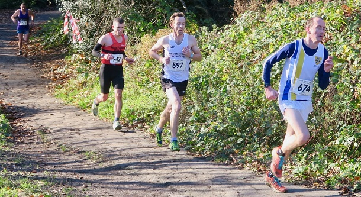

The second race in the Kent Fitness League 2021/22 season took place in Eltham on Sunday Nov 28th, writes Jim Knight. 508 runners from 18 Kent Athletics Clubs tackled the hilly course through Oxleas Woods in bright sunny, but cold conditions.
After coming 2nd in the first race in Swanley on Nov 12th, Sevenoaks ladies ran even better in Eltham to win the race and now lead the series.
Star runner Andrea Berquez was 4th in Swanley but missed the second race. However, Suzy Claridge (7th), Cath Linney ( 8th), Rebecca Pickard (9th) and Pauline Dalton (31st) all ran superbly in Eltham to clinch the team win from Petts Wood Runners.
In the men’s race, Allan Lee was 2nd in Swanley but missed Eltham through injury. However, James Mason led the team home in Eltham with an impressive 3rd place, followed by Andrew Hutchinson (23rd), Ed Saunders (28th), Michael Lockhead (44th), and Richard Alford Smith (48th). The other scoring members of the team were Andrew Mead, Jim Harness and Simon Hallpike.
17 year old Harvey Taylor put in another great performance to come 54th.
The men’s team placed 5th in Eltham and are 5th in the series, with the combined team also 5th in the series.
The SAC results were:
| Ov Pos | Lg Pos | Bib | Runner | Age | Time | Club | Rating | # Races |
|---|---|---|---|---|---|---|---|---|
| 3 | 3 | 674 | James Mason | 38 | 35:44 | Sevenoaks AC | 99.37 | 14 |
| 23 | 23 | 665 | Andrew Hutchinson | 42 | 38:28 | Sevenoaks AC | 93.06 | 13 |
| 26 | 26 | 688 | Edmund Saunders | 39 | 38:32 | Sevenoaks AC | 92.11 | 13 |
| 44 | 44 | 673 | Michael Lochead | 40 | 39:37 | Sevenoaks AC | 86.44 | 13 |
| 49 | 48 | 637 | Richard Alford-Smith | 45 | 40:06 | Sevenoaks AC | 85.17 | 6 |
| 56 | 54 | 694 | Harvey Taylor | 17 | 40:38 | Sevenoaks AC | 83.28 | 2 |
| 60 | 58 | 702 | Daniel Witt | 46 | 40:53 | Sevenoaks AC | 82.02 | 59 |
| 66 | 64 | 675 | Andrew Mead | 53 | 41:22 | Sevenoaks AC | 80.13 | 40 |
| 77 | 73 | 652 | Chris Fenn | 30 | 42:10 | Sevenoaks AC | 77.29 | 2 |
| 101 | 94 | 661 | Jim Harness | 54 | 43:55 | Sevenoaks AC | 70.66 | 15 |
| 102 | 95 | 676 | Andrew Milne | 39 | 44:00 | Sevenoaks AC | 70.35 | 29 |
| 105 | 9 | 642 | Suzy Claridge | 49 | 44:11 | Sevenoaks AC | 95.90 | 7 |
| 106 | 10 | 672 | Catherine Linney | 52 | 44:19 | Sevenoaks AC | 95.38 | 36 |
| 107 | 11 | 915 | Rebecca Pickard | 45 | 44:25 | Sevenoaks AC | 94.87 | 2 |
| 111 | 13 | 916 | Hannah Sangan | 27 | 44:46 | Sevenoaks AC | 93.85 | Debut |
| 130 | 112 | 679 | James Nash | 30 | 45:41 | Sevenoaks AC | 64.98 | 7 |
| 139 | 21 | 657 | Vanessa Gilmartin | 46 | 46:08 | Sevenoaks AC | 89.74 | 18 |
| 149 | 24 | 647 | Julia Davis | 24 | 46:36 | Sevenoaks AC | 88.21 | 2 |
| 164 | 137 | 650 | Graham Dwyer | 49 | 46:52 | Sevenoaks AC | 57.10 | 13 |
| 184 | 33 | 645 | Pauline Dalton | 57 | 47:26 | Sevenoaks AC | 83.59 | 51 |
| 217 | 177 | 664 | Nick Humphrey-Taylor | 49 | 49:17 | Sevenoaks AC | 44.48 | 7 |
| 226 | 185 | 651 | Andrew Evans | 51 | 49:45 | Sevenoaks AC | 41.96 | 46 |
| 228 | 187 | 680 | Sebastian Naughton | 47 | 49:48 | Sevenoaks AC | 41.32 | 2 |
| 236 | 46 | 699 | Bridgit Weekes | 63 | 50:00 | Sevenoaks AC | 76.92 | 12 |
| 281 | 218 | 686 | Andrew Rackham | 48 | 52:09 | Sevenoaks AC | 31.55 | 17 |
| 294 | 69 | 691 | Sarah Shewell | 62 | 52:41 | Sevenoaks AC | 65.13 | 114 |
| 332 | 246 | 660 | Simon Hallpike | 68 | 54:36 | Sevenoaks AC | 22.71 | 55 |
| 356 | 99 | 685 | Ella Pyman | 55 | 55:44 | Sevenoaks AC | 49.74 | 14 |
| 361 | 102 | 704 | Samantha Znetyniak | 46 | 56:05 | Sevenoaks AC | 48.21 | 5 |
| 446 | 157 | 917 | Clair Thornton | 46 | 1:03:01 | Sevenoaks AC | 20.00 | 15 |
| 459 | 295 | 693 | Lionel Stielow | 72 | 1:04:32 | Sevenoaks AC | 7.26 | 19 |
| 485 | 178 | 639 | Alzbeta Benn | 40 | 1:08:30 | Sevenoaks AC | 9.23 | 5 |
| 498 | 186 | 671 | Sylvia Lewis | 69 | 1:12:40 | Sevenoaks AC | 5.13 | 20 |
The full results are here.
The next race in the series will take place in Betteshanger Park, Deal on Dec 12th.

The Kent Fitness League is a series of cross-country races between the 18 registered Athletics Clubs in Kent. Any number of club members can compete, but 12 are needed to score in the team competition – 8 men (of whom one must be aged 60+, two must be 50+ and two 40+) and 4 women (of whom one must be aged 55+,one 45+ and one 35+).